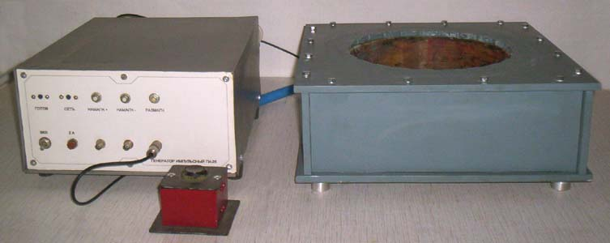

Импульсный демагнетизатор
стали контейнерного типа
(зона размагничивания диаметром 250 мм высотой 80 мм)
Введение
Размагничивание стальных изделий может осуществляться посредством переменного магнитного поля с затухающей амплитудой [4]. Использование импульсного режима позволяет существенно сократить затраты электроэнергии, снизить тепловые потери и повысить производительность. При этом для создания размагничивающего магнитного поля используется индуктор, подключенный к генератору импульсов тока с переменной (чередующейся) полярностью и затухающей амплитудой [2]. Стальной образец помещается внутрь индуктора в зону размагничивания, после чего запускается генератор импульсов тока. Ранее существовавший порядок доменной структуры ферромагнетика разрушается, и образец размагничивается.
Конструкция и назначение
Демагнетизатор представляет из себя установку, состоящую из генератора мощных импульсов тока [2] и индуктора - соленоида, помещенного в ферромагнитный корпус. Рабочая зона (зона размагничивания) индуктора - цилиндр диаметром 250 мм и высотой 80 мм. Охлаждение обмотки естественное воздушное. Внутри индуктора имеется датчик температуры. При нагреве обмотки выше предельной температуры импульсный генератор переходит в режим ожидания. Возобновление работы становится возможным после охлаждения обмотки. Основное назначение демагнетизатора - размагничивание крупных стальных изделий - пресс-форм, заготовок, подшипников, инструмента. Начальная напряженность магнитного поля в зоне размагничивания достаточна для максимально полного размагничивания образцов из любых марок стали. Зона размагничивания может закрываться сверху стальной крышкой, играющей роль полюсного наконечника и позволяющей повысить напряженность магнитного поля в зоне размагничивания и его однородность.

Технические данные:
Контроль магнитной индукции в зоне размагничивания демагнетизатора проводился с помощью тесламетра [3].
Способ применения
Импульсный генератор подключается к сети переменного тока напряжением 220 или 380 В частотой 50 Гц со стандартными защитными устройствами и заземлением. Индуктор устанавливается в удобном для работы положении и подключается к генератору. Стальной образец помещается в зону размагничивания и закрепляется. Зона размагничивания закрывается сверху стальной крышкой, если высота образца позволяет это сделать. После этого посредством нажатия на соответствующую кнопку импульсного генератора проводится цикл размагничивания.
Для оперативного контроля качества размагничивания могут быть применены подручные мелкие стальные предметы: опилки, стружка, гвоздики, предварительно также размагниченные. Более тщательное исследование качества размагничивания можно произвести с помощью супервизора [1], тесламетра или микротесламетра [3], а также магнитного флюксметра (веберметра).
Ссылки:
06.09.2013
Альтернативные источники
энергии
Компьютеры и
Интернет
Магнитные поля
Механотронные системы
Перспективные
разработки
Электроника и
технология